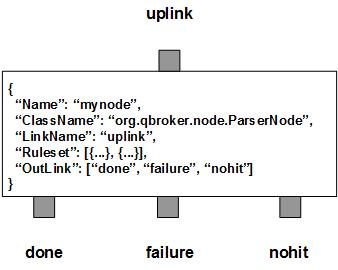

ParserNode parses JMS Message body and extracts properties out of it. According to the rulesets, it filters messages into three outlinks: done for all the parsed messages, nohit for those messages do not belong to any predefined rulesets, failure for the messages failed at the parsing process. Those parsed messages will have new proerties extracted from the body.
ParserNode contains a number of predefined rulesets. These rulesets categorize messages into non-overlapping groups. Therefore, each rule defines a unique message group. The ruleset also defines the parser and its parsing rules for the group. Different groups may have different parser or different parser parameters. Due to JMS specifications, you have to clear user properties before resetting them on a readonly message. You can specify ResetOption in a ruleset so that the message header will be reset for modifications. Its value is 0 for no reset, 1 for optional reset and 2 for absolute reset. With each ruleset, you can also specify the data to be parsed via FiledName. In default, the FiledName is set to "body", indicating to parse the message body.
ParserNode also supports customized parsers via plugins. In this case, the full ClassName of the parser and its ParserArgument must be well defined in the ruleset. The class should have a public method of parse() that takes the String to be parsed as the only argument. The returned object has to be either a Map or an Event. It must have a constructor taking a Map, or a List, or just a String as the only argument for configurations. ParserNode will invoke the public method to parse the either message body or certain message property as a text.
ParserNode always adds an extra ruleset for the nohit messages. This nohit ruleset is always the first ruleset with the id of 0. On the node level, DisplayMask and StringProperty control the display result of outgoing messages.
You are free to choose any names for the three fixed outlinks. But ParserNode always assumes the first outlink for done, the second for failure and the last for nohit.
The parse operation is executed via the pre-defined rulesets. Therefore, the configuration of the rulesets is critical to the operations of ParserNode. Here are complete properties of rulesets for ParserNode.
| Property Name | Data Type | Requirement | Description | Examples |
|---|---|---|---|---|
| Name | alphanumeric with no spaces | mandatory | name of the ruleset | event |
| ClassName | alphanumeric with no spaces | optional | full classname of the plugin parser | org.qbroker.common.Simpleparser |
| ResetOption | integer | optional | option to reset properties | 2 (default: 0) |
| KeepBody | string of true or false | optional | flag to keep body after the parse operation | true (default: false) |
| FieldName | string | optional | name of a property to parse | |
| MapKey | string | optional | key name of a MapMessage to parse | |
| ParserArgument | list | optional | list of configurations for parser | see example |
| PreferredOutLink | alphanumeric with no spaces | mandatory for bypass only | name of the preferred outlink | bypass |
| FormatterArgument | list | optional | list of post format operations | see example |
| JMSPropertyGroup | list | optional | list of pattern groups on properties to select messages | see example |
| XJMSPropertyGroup | list | optional | list of pattern groups on properties to exclude messages | see example |
| PatternGroup | list | optional | list of pattern groups on body to select messages | see example |
| XPatternGroup | list | optional | list of pattern groups on body to exclude messages | see example |
| StringProperty | map | optional | for setting the user properties on the messages | see example |
{
...
"Ruleset": [{
"Name": "bypass",
"PreferredOutLink": "BYPASS",
"JMSPropertyGroup": [{
"JMSType": "^score$"
}]
}],
...
}
where it routes the messages to the outlink of BYPASS.
Here is an example of the parser ruleset.
{
...
"Ruleset": [{
"Name": "data",
"ClassName": "org.qbroker.common.SimpleParser",
"ResetOption": "2",
"MapKey": "Data",
"JMSPropertyGroup": [{
"context": "^data$"
}],
"ParserArgument": [{
"CommandType": "^.* CommandType: ([^ ]+)"
},{
"AssetID": " AssetID: ([0-9]+)"
}]
}],
...
}
where it uses SimpleParser to parse the text stored in the Data field of the
message's map. SimpleParser applies Perl5 Pattern match on the text. It
requires a list of ParserArgument to be instanciated. The list is supposed
to list all the names of properties to parsed from the text in the sequential
order. As you can see in the example above, two properties, CommandType and
AssetID, are parsed out from the text. Upon success, the message will have
those two properties set with the values from the map. The parenthese defines
what portion of the text will be the value for the property.
Here is an example of ParserNode:
{
"Name": "node_parser",
"ClassName": "org.qbroker.node.ParserNode",
"Operation": "parse",
"LinkName": "root",
"Capacity": "6",
"WaitTime": "50",
"DisplayMask": "0",
"Ruleset": [{
"Name": "score",
"JMSPropertyGroup": [{
"JMSType": "^score$"
}],
"ClassName": "org.qbroker.common.SimpleParser",
"ParserArgument": [{
"CollectTime": "^(\\d\\d\\d\\d-\\d+-\\d+ \\d+:\\d+:\\d+,\\d\\d\\d \\w+)"
},{
"IP": " (\\d+\\.\\d+\\.\\d+\\.\\d+)"
},{
"Hostname": " ([^ ]+)"
},{
"Username": " ([^ ]+)"
},{
"JMSType": " ([^ ]+)"
},{
"GameID": " ([^ ]+)"
},{
"body": " (.*)$"
}]
},{
"Name": "event",
"JMSPropertyGroup": [{
"JMSType": "^event$"
}],
"ClassName": "org.qbroker.event.EventParser"
}],
"OutLink": ["parsed", "failure", "nohit"]
}
where there are two rulesets. The second rule is using a different plugin
without any ParserArgument.